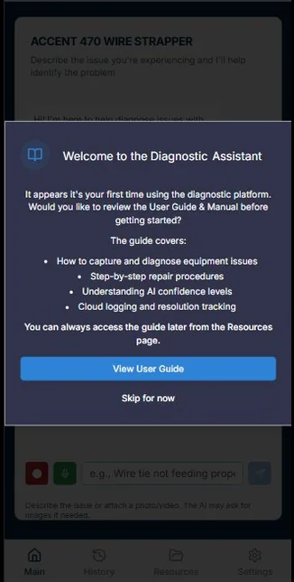
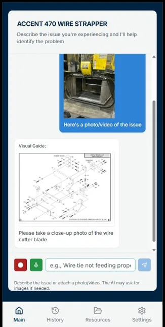
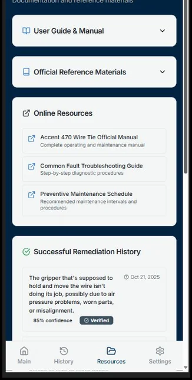
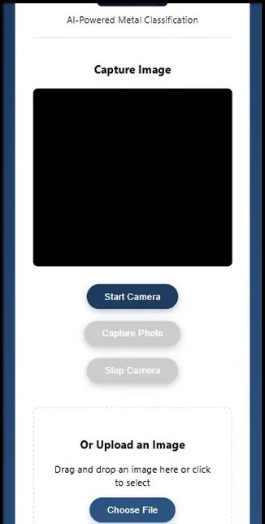
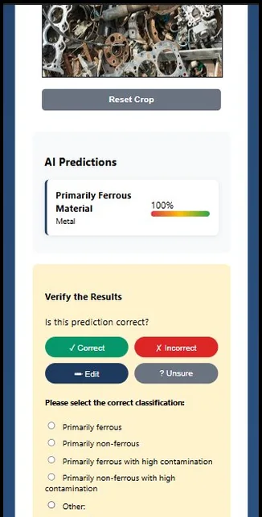

open →



Diagnostic Assistant
In progress
An AI coach that walks technicians through faults on niche industrial equipment, citing the service manual as it goes.
RAG over service manuals · multi-turn UI · image analysis · guided decision trees
open →


Scrap Metal ID
Deployed
Point a phone at the pile and get the grade. Trained on 15,000+ images; the yard's own corrections retrain it.
Nyckel image classification · on-device inference · continuous learning · ferrous + non-ferrous taxonomy
open →
VRespite
Parked
VR sensory rooms for students who need a fast exit from overload, and immersive experiences for palliative care. Parked, not forgotten.
360° video production · purpose-built VR environments · clinical + educational deployment
open →
Executive Assistant lanes
Deployed
Scheduled automation lanes that read a working inbox (mail, PDFs, quotes, meeting notes) and write back briefs, summaries and registers, four times a day, with a health-and-spend lane watching the rest.
n8n · model gateway · Drive as the state store · OCR for scanned PDFs · Telegram + Gmail alerts · one shared error handler
open →
Priority Pulse
Local-first
Daily triage · 2026-03-08 · 9/9 sources
Active7h 12m
Switches412
Fragmentation94/100
ModeReactive
Deep work2 blocks
Best focus38m
Email
2h 34m
CMMS
1h 07m
Vendors
52m
Fleet
41m
Enviro
28m
A local-first daily triage for a high-interrupt role. Screen activity, calendar, email and the CMMS go in; one honest read-out lands in Obsidian, and the note you edit there is the note it reads back tomorrow.
The sample on the left is a real day's output: where the time went, what was dropped, and what to protect tomorrow. No cloud, no telemetry.
Python · Claude API · OAuth 2.0 multi-source ingestion · Obsidian as the two-way interface · scheduler + watchdog · local-first